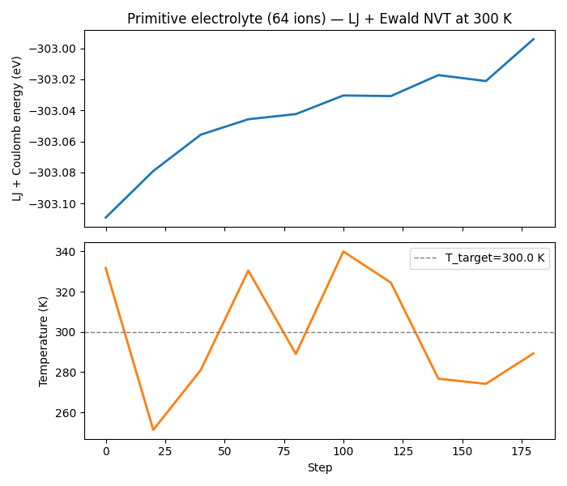

Note
Go to the end to download the full example code.
Additive Model Composition (LJ + Ewald)#
Note
This is an intermediate-level example. It assumes familiarity with
the basic model wrapping concepts covered in the
Models: Wrapping ML Interatomic Potentials and in
examples/advanced/08_custom_model_wrapper.py. Here we focus on
composing existing wrappers rather than building them from scratch.
Real force fields for ionic systems combine multiple physical contributions:
Short-range repulsion / dispersion — described by Lennard-Jones (or Born–Mayer) pair potentials that capture electron-cloud overlap and van der Waals attraction.
Long-range Coulomb interactions — must be treated with Ewald summation or PME to avoid artifacts from naive truncation.
nvalchemi lets you combine any
BaseModelMixin-compatible models with the
+ operator:
combined = lj_model + ewald_model
The result is a PipelineModelWrapper that
calls each sub-model in sequence and sums their energies, forces, and
stresses element-wise. Each model computes its own forces independently
(analytically or via its own internal autograd).
For advanced composition — where one model’s output feeds into another’s
input (e.g. charge prediction + electrostatics), or where forces must be
computed via shared autograd over the summed energy of multiple models — use
the explicit PipelineModelWrapper
constructor with PipelineGroup and
PipelineStep.
This example:
Builds a simple charge-neutral ionic fluid (alternating +1/−1 particles on a cubic lattice, inspired by a primitive model electrolyte).
Combines a Lennard-Jones short-range model with an Ewald long-range model using the
+operator.Demonstrates
make_neighbor_hooks()which returns the single hook needed for the composite model (using the maximum cutoff across all sub-models).Runs 200 NVT steps and logs the combined (LJ + Coulomb) energy.
Key concepts demonstrated#
model_a + model_bsyntax — creates aPipelineModelWrapperwith independent direct-force groups.a + b + cchains — flattens into a single pipeline with one group per model.make_neighbor_hooks()— returns a list with one correctly-configuredNeighborListHook.
from __future__ import annotations
import logging
import os
import torch
from nvalchemi.data import AtomicData, Batch
from nvalchemi.dynamics import NVTLangevin
from nvalchemi.dynamics.base import DynamicsStage
from nvalchemi.dynamics.hooks import LoggingHook
from nvalchemi.hooks import WrapPeriodicHook
from nvalchemi.models.ewald import EwaldModelWrapper
from nvalchemi.models.lj import LennardJonesModelWrapper
logging.basicConfig(level=logging.INFO)
Building the composite model#
We model a primitive-electrolyte ionic fluid: equal numbers of cations (+1 e) and anions (−1 e) interacting via LJ + Coulomb. This is the simplest model for a molten salt or ionic solution.
LJ parameters — both species use the same σ and ε (symmetric primitive model), representing hard-core repulsion at short range.
Ewald model — handles the long-range 1/r Coulomb tail. The real-space cutoff must be the same for both models (or the Ewald cutoff may be larger); the pipeline wrapper automatically takes the maximum.
LJ_EPSILON = 0.05 # eV — moderate well depth for a "soft" ion
LJ_SIGMA = 2.50 # Å — ionic diameter
LJ_CUTOFF = 8.0 # Å — short-range cutoff
EWALD_CUTOFF = 8.0 # Å — Ewald real-space cutoff (same here)
MAX_NEIGHBORS = 128
lj_model = LennardJonesModelWrapper(
epsilon=LJ_EPSILON,
sigma=LJ_SIGMA,
cutoff=LJ_CUTOFF,
)
ewald_model = EwaldModelWrapper(
cutoff=EWALD_CUTOFF,
accuracy=1e-6,
)
# Combine with the + operator. This creates a PipelineModelWrapper where
# each model occupies its own "direct"-force group — both LJ and Ewald
# compute forces analytically inside their Warp kernels.
combined = lj_model + ewald_model
print(f"Combined model type: {type(combined).__name__}")
print(f"Sub-models: {[type(m).__name__ for m in combined._models]}")
# The synthesised ModelConfig reflects the union of sub-model capabilities.
card = combined.model_config
print(
f"Combined neighbor config: cutoff={card.neighbor_config.cutoff} Å, "
f"format={card.neighbor_config.format.name}"
)
Combined model type: PipelineModelWrapper
Sub-models: ['LennardJonesModelWrapper', 'EwaldModelWrapper']
Combined neighbor config: cutoff=8.0 Å, format=MATRIX
System: primitive electrolyte on a cubic lattice#
Place N_SIDE³ ions on a simple-cubic lattice, alternating +1 / −1 charges (like NaCl but with identical mass and LJ parameters for both species). The system is charge-neutral by construction (equal number of each sign).
N_SIDE = 4 # 4³ = 64 ions
T_INIT = 300.0 # K (room temperature — keeps ions near the LJ+Coulomb minimum)
M_ION = 23.0 # amu (sodium-like mass for both species)
KB_EV = 8.617333262e-5 # eV/K
# Lattice spacing = LJ equilibrium distance r_min = 2^(1/6) σ.
# At this spacing the LJ force is zero; the net Coulomb force is also zero
# by Madelung symmetry. Both sub-models combined therefore produce near-zero
# forces at the initial lattice sites, giving a well-defined starting point.
r_min = 2 ** (1 / 6) * LJ_SIGMA # ≈ 2.806 Å
box_size = N_SIDE * r_min
coords = torch.arange(N_SIDE, dtype=torch.float32) * r_min
gx, gy, gz = torch.meshgrid(coords, coords, coords, indexing="ij")
positions = torch.stack([gx.flatten(), gy.flatten(), gz.flatten()], dim=-1)
n_atoms = positions.shape[0] # 64
# Checkerboard charge pattern: +1 if (ix+iy+iz) is even, −1 otherwise.
ix = torch.arange(N_SIDE).repeat_interleave(N_SIDE * N_SIDE)
iy = torch.arange(N_SIDE).repeat(N_SIDE).repeat_interleave(N_SIDE)
iz = torch.arange(N_SIDE).repeat(N_SIDE * N_SIDE)
parity = (ix + iy + iz) % 2 # 0 or 1
charges_1d = torch.where(parity == 0, torch.tensor(1.0), torch.tensor(-1.0))
charges = charges_1d # (N, ) — required shape for AtomicData
atomic_numbers = torch.full((n_atoms,), 11, dtype=torch.long) # all "Na"
kT = KB_EV * T_INIT
torch.manual_seed(1)
v_scale = (kT / M_ION) ** 0.5
velocities = torch.randn(n_atoms, 3) * v_scale
velocities -= velocities.mean(dim=0, keepdim=True)
cell = torch.eye(3).unsqueeze(0) * box_size
data = AtomicData(
positions=positions,
atomic_numbers=atomic_numbers,
charges=charges, # (N, 1)
forces=torch.zeros(n_atoms, 3),
energy=torch.zeros(1, 1),
cell=cell,
pbc=torch.tensor([[True, True, True]]),
)
data.add_node_property("velocities", velocities)
batch = Batch.from_data_list([data])
print(
f"\nSystem: {n_atoms} ions, box={box_size:.2f} Å, "
f"net charge={charges_1d.sum().item():.0f} e, T_init={T_INIT} K"
)
System: 64 ions, box=11.22 Å, net charge=0 e, T_init=300.0 K
NVT simulation with the composite model#
make_neighbor_hooks()
returns a list containing exactly one
NeighborListHook configured for the
combined model’s effective cutoff (max of all sub-model cutoffs).
Registering this single hook is all that is needed — the neighbor data
is shared between both sub-models via
prepare_neighbors_for_model().
nvt = NVTLangevin(
model=combined,
dt=0.5, # fs — conservative timestep for stiff Coulomb forces
temperature=T_INIT,
friction=0.5, # ps⁻¹ — moderate coupling keeps ions near equilibrium
n_steps=200,
random_seed=99,
)
for hook in combined.make_neighbor_hooks(max_neighbors=MAX_NEIGHBORS):
nvt.register_hook(hook, stage=DynamicsStage.BEFORE_COMPUTE)
nvt.register_hook(WrapPeriodicHook(stage=DynamicsStage.AFTER_POST_UPDATE))
Running and logging#
COMBINED_LOG = "lj_ewald_combined.csv"
with LoggingHook(backend="csv", log_path=COMBINED_LOG, frequency=20) as log_hook:
nvt.register_hook(log_hook)
batch = nvt.run(batch)
print(f"\nNVT (LJ + Ewald) completed {nvt.step_count} steps. Log → {COMBINED_LOG}")
NVT (LJ + Ewald) completed 200 steps. Log → lj_ewald_combined.csv
Results — combined energy and temperature#
import csv # noqa: E402
rows = []
try:
with open(COMBINED_LOG) as f:
rows = list(csv.DictReader(f))
except FileNotFoundError:
print(f"Log file {COMBINED_LOG} not found — skipping summary.")
if rows:
print(f"\n{'step':>6} {'energy (eV)':>14} {'temperature (K)':>16}")
print("-" * 42)
for row in rows:
print(
f"{int(float(row['step'])):6d} "
f"{float(row['energy']):14.4f} "
f"{float(row['temperature']):16.2f}"
)
step energy (eV) temperature (K)
------------------------------------------
0 -303.1091 331.67
20 -303.0791 251.31
40 -303.0557 281.06
60 -303.0457 330.49
80 -303.0424 289.04
100 -303.0304 339.98
120 -303.0308 324.50
140 -303.0172 276.73
160 -303.0211 274.19
180 -302.9941 289.33
Extending the composition#
The + operator chains naturally for three or more models:
from nvalchemi.models.dftd3 import DFTD3ModelWrapper
dftd3 = DFTD3ModelWrapper(cutoff=10.0, ...)
full_model = lj_model + ewald_model + dftd3 # 3 direct-force groups
For dependent pipelines — where one model’s output feeds into another’s
input (e.g. a charge predictor wired into an electrostatics model), or where
forces must be computed via shared autograd over the summed energy — use the
explicit PipelineModelWrapper constructor:
from nvalchemi.models.pipeline import (
PipelineModelWrapper, PipelineGroup, PipelineStep,
)
# AIMNet2 predicts charges+energy; Ewald uses those charges.
# Forces backpropagate through both via shared autograd.
pipe = PipelineModelWrapper(groups=[
PipelineGroup(
steps=[
PipelineStep(aimnet2, wire={"charges": "node_charges"}),
ewald,
],
use_autograd=True, # shared autograd over summed energy
),
PipelineGroup(steps=[dftd3]),
])
A single call to combined.make_neighbor_hooks() returns the one hook
needed for the combined system, automatically choosing the maximum cutoff
and the most general neighbor format (MATRIX if any sub-model requires it).
Optional plot — energy vs step#
if os.getenv("NVALCHEMI_PLOT", "0") == "1" and rows:
try:
import matplotlib.pyplot as plt
steps = [int(float(r["step"])) for r in rows]
energy = [float(r["energy"]) for r in rows]
temps = [float(r["temperature"]) for r in rows]
fig, (ax1, ax2) = plt.subplots(2, 1, figsize=(7, 6), sharex=True)
ax1.plot(steps, energy, lw=2)
ax1.set_ylabel("LJ + Coulomb energy (eV)")
ax1.set_title(
f"Primitive electrolyte ({n_atoms} ions) — LJ + Ewald NVT at {T_INIT:.0f} K"
)
ax2.plot(steps, temps, lw=2, color="tab:orange")
ax2.axhline(T_INIT, color="gray", ls="--", lw=1, label=f"T_target={T_INIT} K")
ax2.set_xlabel("Step")
ax2.set_ylabel("Temperature (K)")
ax2.legend()
fig.tight_layout()
plt.savefig("lj_ewald_combined.png", dpi=150)
print("Saved lj_ewald_combined.png")
plt.show()
except ImportError:
print("matplotlib not available — skipping plot.")

Saved lj_ewald_combined.png
Total running time of the script: (0 minutes 1.276 seconds)